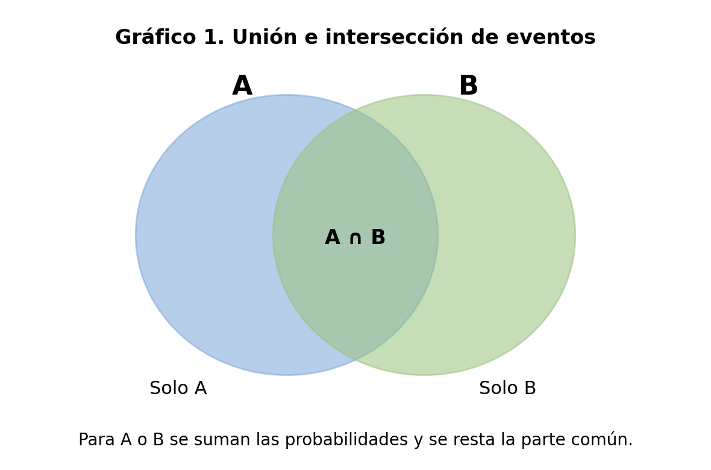
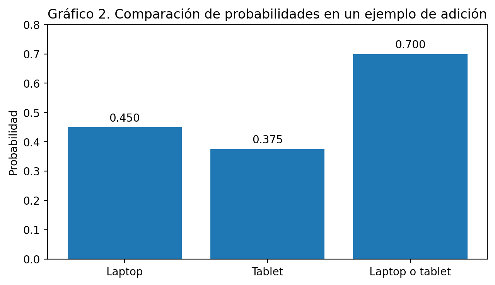

✓
Comprender cuándo se aplica la ley de adición y cuándo se utiliza la ley de multiplicación en un problema de probabilidad.
Comprender cuándo usar la ley de adición y cuándo aplicar la ley de multiplicación permite interpretar situaciones cotidianas y tecnológicas con mayor claridad probabilística.
En la vida diaria aparecen muchas situaciones en las que se debe tomar una decisión sin conocer con total certeza lo que ocurrirá. Por ejemplo, un estudiante puede preguntarse si hoy irá al colegio en bus o en moto, o un programador web puede querer estimar si un usuario entrará desde celular o desde computador. La probabilidad permite analizar estos casos y expresar qué tan posible es que suceda un evento.
Dentro de la probabilidad existen dos reglas muy importantes: la ley de adición y la ley de multiplicación. La primera se usa cuando interesa calcular la posibilidad de que ocurra un evento u otro evento. La segunda se utiliza cuando se necesita encontrar la probabilidad de que ocurran dos eventos relacionados dentro de una misma situación o en una secuencia.
En esta guía se explican estas dos leyes con lenguaje sencillo, ejemplos resueltos, representaciones gráficas y actividades prácticas. La intención es que el estudiante no solo recuerde una fórmula, sino que aprenda a identificar qué operación conviene usar según la pregunta del problema.
La ley de adición se aplica cuando la pregunta del problema contiene expresiones como “A o B”. En otras palabras, se usa cuando interesa saber la probabilidad de que ocurra un evento, otro evento, o cualquiera de los dos.
Existen dos casos. El primero ocurre cuando los eventos son mutuamente excluyentes; es decir, no pueden suceder al mismo tiempo. El segundo aparece cuando los eventos sí pueden coincidir en algunos resultados; en ese caso se debe restar la parte común para no contarla dos veces.
En una bolsa hay 10 fichas: 4 rojas, 3 azules y 3 verdes. Se extrae una sola ficha. ¿Cuál es la probabilidad de obtener una ficha roja o una ficha azul?
Evento A: obtener una ficha roja. P(A) = 4/10
Evento B: obtener una ficha azul. P(B) = 3/10
Como en una sola extracción no se puede obtener a la vez roja y azul, los eventos son mutuamente excluyentes.
La probabilidad de obtener una ficha roja o azul es 0.70, es decir, un 70 %.
En un grupo de 40 estudiantes de programación web, 18 usan laptop para desarrollar actividades, 15 usan tablet y 5 usan ambos dispositivos. ¿Cuál es la probabilidad de seleccionar al azar un estudiante que use laptop o tablet?
| Dato | Valor |
|---|---|
| Cantidad de estudiantes | 40 |
| Usan laptop | 18 |
| Usan tablet | 15 |
| Usan ambos | 5 |
En este ejemplo sí fue necesario restar la intersección, porque algunos estudiantes estaban contados en ambos grupos. Por tanto, la probabilidad es 0.70.

Representación gráfica de la unión e intersección de dos eventos.

Comparación de probabilidades del ejemplo de adición.
La ley de multiplicación se utiliza cuando la pregunta del problema involucra expresiones como “A y B”, “primero ocurre A y luego B” o cuando se analiza un recorrido dentro de un diagrama de árbol.
Si los eventos son independientes, la ocurrencia de uno no modifica la probabilidad del otro. Si los eventos son dependientes, la segunda probabilidad cambia según lo que haya ocurrido primero.
Se lanza una moneda y un dado al mismo tiempo. ¿Cuál es la probabilidad de obtener cara y un número par?
P(cara) = 1/2
P(número par) = 3/6 = 1/2
Los eventos son independientes, porque el resultado de la moneda no afecta al dado.
La probabilidad de obtener cara y un número par es 0.25, es decir, 25 %.
Suponga que el 60 % de las visitas a un sitio web se realizan desde móvil. De esas visitas móviles, el 70 % usa Chrome. ¿Cuál es la probabilidad de que una visita escogida al azar sea desde móvil y además use Chrome?
La respuesta es 0.42. Esto significa que 42 de cada 100 visitas, aproximadamente, serían de usuarios que entran desde móvil y usan Chrome.

Diagrama de árbol para identificar probabilidades compuestas.
| Pregunta o pista | Palabra clave | Ley sugerida | Ejemplo corto |
|---|---|---|---|
| Se pide uno u otro evento | o | Adición | Roja o azul |
| Los eventos no pueden pasar juntos | o | Adición simple | Cara o sello |
| Se pide que ocurran ambos | y | Multiplicación | Cara y par |
| Hay una secuencia o un camino | y / luego | Multiplicación | Móvil y Chrome |
Busca expresiones como o, uno u otro, cualquiera de los dos y revisa si existe intersección.
Busca expresiones como y, además, luego, secuencia o recorridos tipo diagrama de árbol.
Lee cada situación e indica si se resuelve con la ley de adición o con la ley de multiplicación.
Se extrae una ficha de una bolsa y se quiere saber la probabilidad de que sea roja o verde.
Se lanza una moneda y un dado; se desea conocer la probabilidad de obtener sello y un número mayor que 4.
En una clase se escoge un estudiante al azar y se pregunta por la probabilidad de que use laptop o tablet.
En una página web se analiza la probabilidad de que una visita sea desde móvil y use Chrome.
En un grupo de 30 estudiantes, 12 utilizan laptop, 10 utilizan tablet y 4 utilizan ambos dispositivos.
| Dato | Valor |
|---|---|
| Total de estudiantes | 30 |
| Utilizan laptop | 12 |
| Utilizan tablet | 10 |
| Utilizan ambos dispositivos | 4 |
¿Cuál es la probabilidad de seleccionar un estudiante que use laptop o tablet?
¿Cuál es la probabilidad de seleccionar un estudiante que use solo laptop?
¿Cuántos estudiantes no usan ninguno de esos dos dispositivos?
Un sitio web recibe el 55 % de sus visitas desde celular. De esas visitas, el 80 % se realiza usando Chrome.
¿Cuál es la probabilidad de que una visita sea desde celular y use Chrome?
¿Qué recorrido representa correctamente el diagrama de árbol sencillo para esta situación?
Si el sitio recibe 200 visitas, ¿aproximadamente cuántas serían desde celular y Chrome?
Responde el quiz de verificación y comprueba tu comprensión de las leyes de adición y multiplicación.
1. La ley de adición se usa principalmente cuando queremos calcular:
2. Si A y B son eventos mutuamente excluyentes, entonces:
3. La ley de multiplicación se usa para calcular:
4. Si se lanza una moneda dos veces, ¿cuál es la probabilidad de obtener cara en ambos lanzamientos?
5. Un diagrama de árbol en probabilidad sirve para:
Recurso audiovisual de apoyo para reforzar la explicación del tema 2 sobre leyes de adición y multiplicación en probabilidad.
Infografía complementaria para reforzar visualmente los conceptos y ejemplos trabajados en el OVA.